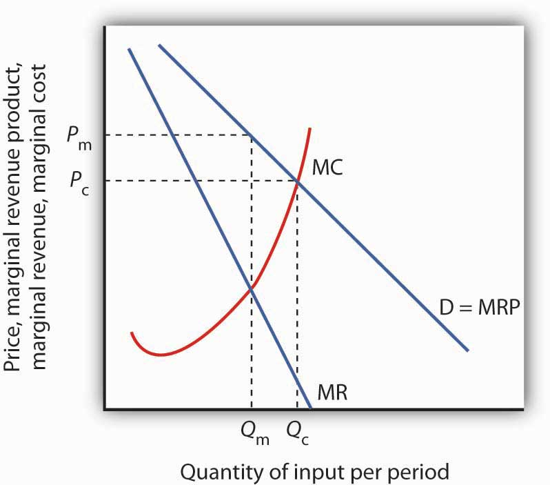
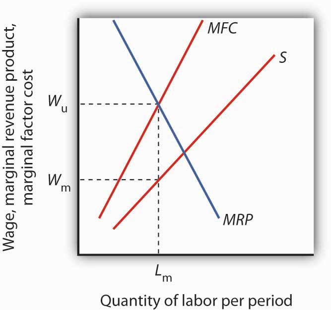

Buyers are not the only agents capable of exercising market power in factor-pricing choices. Suppliers of factor services can exercise market power and act as price setters themselves in two ways. First, a supplier may be a monopoly or have a degree of monopoly power in the supply of a factor. In that case, economists analyze the firm’s choices as they would analyze those of any other imperfectly competitive firm. Second, individual suppliers of a factor of production may band together in an association to gain clout in the marketplace. Farmers, for example, often join forces to offset what they perceive as unfair market power on the part of buyers of their products. Workers may join together in a union in order to enhance their bargaining power with their employers. Each case is discussed below.
A firm with monopoly power over a particular factor can be expected to behave like any other monopoly. It will choose its output where the marginal revenue and marginal cost curves intersect and charge a price taken from its demand curve.
Figure 14.6 Monopoly Factor Supply
A monopoly supplier of a factor of production acts just as any other monopoly firm. Here, the monopoly faces the demand curve D and the marginal revenue curve MR. Given the marginal cost curve MC, it maximizes profit by supplying Qm and charging a price Pm.
A monopoly supplier of a factor faces a demand curve that represents the MRP of the factor. This situation is illustrated in Figure 14.6 "Monopoly Factor Supply". The firm will charge a price Pm equal to the MRP of the factor and sell Qm units of the factor.
Workers in a competitive market receive a wage equal to their MRP. If they face monopsony power, they get less. Regardless of the market structure, workers are likely to seek higher wages and better working conditions. One way they can try to improve their economic status is to organize into a labor unionAn association of workers that seeks to raise wages and to improve working conditions., an association of workers that seeks to raise wages and to improve working conditions. Unions represent their members in collective bargainingA process of negotiation of worker contracts between unions and employers., a process of negotiation of worker contracts between unions and employers. To strengthen its position, a union may threaten a strikeA refusal by union members to work.—a refusal by union members to work—unless its demands are met.
Workers have united to try to better their lot at least since the Middle Ages, when the first professional guilds were formed in Europe. In the United States, “workingmen’s societies” sprang up in the late eighteenth century. These organizations were craft unionsOrganizations uniting skilled workers in the same trade. uniting skilled workers in the same trade in an attempt to increase wages, shorten working hours, and regulate working conditions for their members.
One goal unions consistently sought was a closed shopA firm in which only union members can be hired., where only union members can be hired—an arrangement that gives unions monopoly power in the supply of labor. A second objective was to gain greater political and economic strength by joining together associations of different crafts. Union goals went largely unfulfilled until the twentieth century, when the courts began to favor collective bargaining between workers and employers in disputes over wages and working conditions. Closed-shop arrangements are illegal in the United States today, but many states permit union shopA firm that is allowed to hire nonunion workers who are required to join the union within a specified period. arrangements, in which a firm is allowed to hire nonunion workers who are required to join the union within a specified period. About 20 states have right-to-work lawsLaws that prohibit union shop rules. which prohibit union shop rules.
The development of the industrial unionA form of union that represents the employees of a particular industry, regardless of their craft., a form of union that represents the employees of a particular industry, regardless of their craft, also aided the growth of the labor movement. The largest industrial union in the United States, the AFL-CIO, was formed in 1955, when unions accounted for just over 35% of the labor force. The AFL-CIO remains an important economic and political force, but union strength has fallen since its peak in the 1950s; today, less than 10% of workers in the private sector belong to unions. Quite dramatically, in 2005, three unions, representing about a third of the total membership, withdrew from the AFL-CIO. The break-away unions argued that they would be more successful working on their own to recruit new members. The impact of this break-up will not be known for several years.
Part of the reason for the failure of unions to represent a larger share of workers lies in the market forces that govern wages. As the marginal revenue product of workers has risen throughout the economy, their wages have increased as well—whether they belonged to a union or not. Impressive economy-wide wage gains over the last two centuries may be one reason why the attraction of unions has remained weak.
Higher wages once dominated the list of union objectives, but more recent agreements have also focused on nonwage issues involving job security, health insurance, provision of child care, and job safety. Unions such as the United Auto Workers have negotiated contracts under which members who are laid off will continue to receive payments nearly equal to the wages they earned while on the job. They have also pushed hard for retirement pensions and for greater worker involvement in management decisions.
Union efforts to obtain higher wages have different effects on workers depending on the nature of the labor market. When unions confront an employer with monopsony power, their task is clear: they seek a wage closer to MRP than the employer is paying. If the labor market is a competitive one in which wages are determined by demand and supply, the union’s task is more difficult. Increasing the wage requires either increasing the demand for labor or reducing the supply. If the union merely achieves a higher wage in the absence of an increase in demand or a reduction in supply, then the higher wage will create a surplus of labor, or unemployment.
The demand for labor in a competitive market is found by summing the MRP curves of individual firms. Increasing demand thus requires increasing the marginal product of labor or raising the price of the good produced by labor.
One way that unions can increase the marginal product of their members is by encouraging investment in their human capital. Consequently, unions may pressure firms to implement training programs. Some unions conduct training efforts themselves.
Another way to increase the MRP of a factor is to reduce the use by firms of substitute factors. Unions generally represent skilled workers, and they are vigorous proponents of minimum wage laws that make unskilled workers more expensive. A higher minimum wage induces firms to substitute skilled for unskilled labor and thus increases the demand for the skilled workers unions represent.
Still another way to increase the MRP of labor is to increase the demand for the products labor produces. The form this union activity generally takes is in the promotion of “Made in the U.S.A.” goods. Unions have also promoted restrictive trade legislation aimed at reducing the supply of foreign goods and thus increasing the demand for domestic ones.
Unions can restrict the supply of labor in two ways. First, they can seek to slow the growth of the labor force; unions from the earliest times have aggressively opposed immigration. Union support for Social Security also cut the labor supply by encouraging workers to retire early. Second, unions can promote policies that make it difficult for workers to enter a particular craft. Unions representing plumbers and electrical workers, for example, have restricted the number of people who can enter these crafts in some areas by requiring that workers belong to a union and then limiting the union’s membership.
Suppose a union has negotiated a closed-shop arrangement (in a country where such arrangements are legal) with an employer that possesses monopsony power in its labor market. The union has a kind of monopoly in the supply of labor. A situation in which a monopsony buyer faces a monopoly seller is called bilateral monopolySituation in which a monopsony buyer faces a monopoly seller.. Wages in this model are indeterminate, with the actual wage falling somewhere between the pure monopoly and pure monopsony outcomes.
Figure 14.7 Bilateral Monopoly
If the union has monopoly power over the supply of labor and faces a monopsony purchaser of the labor the union represents, the wage negotiated between the two will be indeterminate. The employer will hire Lm units of the labor per period. The employer wants a wage Wm on the supply curve S. The union will seek a wage close to the maximum the employer would be willing to pay for this quantity, Wu, at the intersection of the marginal revenue product (MRP) and the marginal factor cost (MFC) curves. The actual wage will be somewhere between these two amounts.
Figure 14.7 "Bilateral Monopoly" shows the same monopsony situation in a labor market that was shown in Figure 14.3 "Monopsony Equilibrium" The employer will seek to pay a wage Wm for a quantity of labor Lm. The union will seek Wu, the highest wage the employer would be willing to pay for that quantity of labor. This wage is found on the MRP curve. The model of bilateral monopoly does not tell us the wage that will emerge. Whether the final wage will be closer to what the union seeks or closer to what the employer seeks will depend on the bargaining strength of the union and of the employer.
Where unions operate effectively in otherwise competitive markets, they may reduce economic efficiency. Efforts to increase demand for American workers through restricting imports or to increase demand for skilled workers by restricting opportunities for unskilled workers almost certainly reduce economic efficiency. Artificial restrictions on the supply of labor reduce efficiency as well. In each case, the wage gain will increase the cost of producing a good or service and thus shift its supply curve to the left. Such efforts, if successful, increase the earnings of union members by creating higher prices and smaller quantities for consumers. They may also reduce the profitability of their employers.
Other attempts by unions to raise wages by increasing the demand for their members are not likely to create inefficiency. For example, union efforts to increase worker productivity or to encourage consumers to buy products made by union members do not reduce economic efficiency.
In the case of bilateral monopoly, the amount of labor employed is restricted by the monopsony firm to a quantity that falls short of the efficient level. In effect, the efficiency damage has already been done. The labor union seeks merely to offset the monopsony firm’s ability to restrict the wage.
Are unions successful in their primary goal of increasing wages? An examination of the impact on wages paid by firms that faced organizing drives by unions between 1984 and 1999 found virtually no change in wages attributable to union organizing efforts. The study examined firms in which unions had either barely won or had barely lost the election. It found that unions that had eked out victories had gone on to organize workers but had had no significant impact on wages or on productivity. John Dinardo and David S. Lee, “Economic Impacts of New Unionization on Private Sector Employers: 1984–2001,” The Quarterly Journal of Economics 119(4) (November 2004): 1383–1441. Other evidence, however, suggests that unions do tend to raise wages for their members. Controlling for other factors that affect wages, over the period 1973 to 2002, unions appear to have increased wages by about 17% on average. David G. Blanchflower and Alex Bryson, “What Effect Do Unions Have on Wages Now and Would Freeman and Medoff be Surprised?” Journal of Labor Research 25:3 (Summer 2004): 383–414. Part of the explanation of this finding is that unions have had the most success in organizing in the public sector, where union pressure for higher wages is most likely to be successful.
Just as workers can unionize to gain a degree of monopoly power in the marketplace, so other suppliers can organize with a similar goal. Two of the most important types of organizations aimed at garnering market power are professional associations and producers’ cooperatives.
Professional people generally belong to organizations that represent their interests. For example, physicians in the United States belong to the American Medical Association (AMA), and lawyers belong to the American Bar Association (ABA). Both organizations work vigorously to advance the economic interests of their members.
Professional organizations often lobby for legislation that protects their members. They may seek to restrict competition by limiting the number of individuals who can be licensed to practice a particular profession. The AMA has been very successful in limiting the number of physicians, thus maintaining higher salaries than would otherwise exist. The ABA has fought legal reforms aimed at limiting awards to plaintiffs who win damage suits; such reforms would be likely to reduce the incomes of lawyers.
Independent producers sometimes band together into a cooperative for the purpose of selling their products. The cooperative sets the price and assigns production quotas to individual firms. In effect, a cooperative acts as a legal cartel.
Because they violate the provisions of laws that outlaw such arrangements in most industries, producers’ cooperatives must be authorized by Congress. Farmers have sometimes been given such rights when they are confronted by monopsony buyers. For example, Congress granted dairy farmers the right to form cooperatives in the 1920s because they faced monopsony buyers. High transportation costs for fresh milk, together with economies of scale in processing milk, generally left only one dairy processor to buy raw milk from dairy farmers in a particular area. By forming a cooperative, farmers could counter the monopsony power of a processor with monopoly power of their own, creating a bilateral monopoly.
Today, with much lower transportation costs, dairy farmers can deal with a national market so that processors no longer have monopsony power. But dairy farmers continue to have the right to form cooperatives. As we have seen in an earlier chapter, dairy farmers also enjoy protection from federal programs that are designed to keep dairy prices high.
Consider the case of bilateral monopoly illustrated in Figure 14.7 "Bilateral Monopoly". Over what range of wages will employment be higher than it would have been if there was a monopsony buyer of labor but no monopoly in the supply of labor?
A high-profile case erupted in April 2011 when the National Labor Relations Board (NLRB), an independent government agency created in 1935 to guarantee the rights of employees to bargain collectively and to investigate charges of unfair labor practices, accused Boeing of illegally setting up a plant for assembling 787 Dreamliners in North Charleston, South Carolina, in order to retaliate against its Seattle-based union, the International Association of Machinists and Aerospace Workers, who brought the case to the Board.
The $750 million factory represents the largest single investment ever made in the state of South Carolina, a right-to-work state. South Carolina governor Nikki Haley said, “Boeing was a dream come true for South Carolina. They came in and brought the hope of the American dream to this state to create real-good-quality jobs.” The board requested that a judge order Boeing to move its Dreamliner production back to Washington state.
At issue was whether Boeing made its decision to locate in South Carolina in order to punish its unionized workers in Seattle, Washington, for past strikes. A Boeing executive had stated to the Seattle Times that an “overriding factor” in the location decision was that “we can’t afford to have a work stoppage every three years.”
Republicans blamed President Obama, whose NLRB appointees took on the case. President Obama said he did not want to discuss a case brought on by an independent agency but that “as a general proposition, companies need to have freedom to relocate.”
Then, in December 2011, Boeing and the Machinists union reached an agreement whereby Boeing agreed to produce a new version of the 737 jet in the Seattle area and the union agreed to ask the NLRB to drop its case, which it did. Still, the issues raised by this case had become a major topic of discussion during the 2012 U.S. presidential election season. According to Steven Greenhouse of the International Herald Tribune, it is no less than a case that “has grown into a political conflagration, fanned by deep resentments between North and South, Democrats and Republicans, union and nonunion workers, and fans and foes of Big Government.”
Sources: Steven Greenhouse, “For Boeing Plant, a Fight Over Jobs and Politics; Labor Board Says Work Should Be Sent to Seattle Area, Angering U.S. South,” International Herald Tribune, Finance, p. 13, July 2, 2011.
Any wage negotiated between the monopsony (the firm hiring the labor) and the monopoly (the union representing the labor) that falls between Wm and Wu will lead to a quantity of labor employed that is greater than Lm. The portion of the supply curve below the negotiated wage becomes irrelevant since the firm cannot hire workers for those wages. The supply curve thus becomes a horizontal line at the negotiated wage until the negotiated wage intersects the supply curve; at wages higher than the negotiated wage, the existing supply curve is operative. Up to the quantity of labor at the intersection of the negotiated wage and the supply curve, the wage and MFC are the same. At any wage between Wm and Wu, the firm will maximize profit by employing labor where MRP and MFC are equal, and this will occur at a quantity of labor that is greater than Lm.